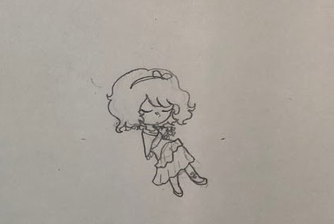
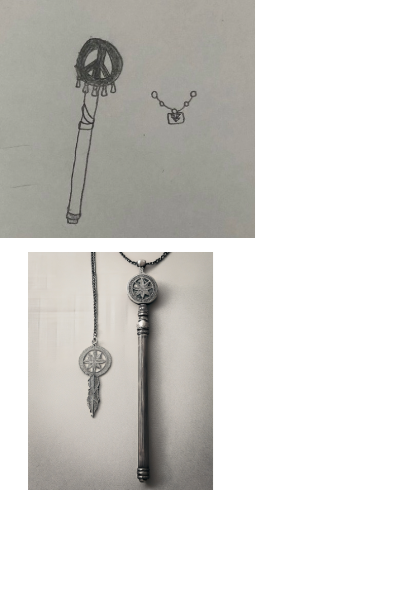
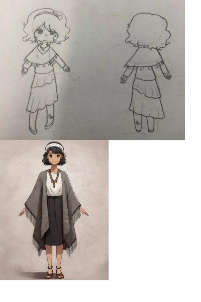

"Manage resources, create treaties, and make every decision count in a world where you only have yourself and those around."
Civil Creator
Amelia Davy (HS Junior)
Tired Game Developer
PITCH
Within Civil creator, you play as a newly appointed leader of Crescent who’s responsible over most aspects of what happens in this small town. Using your management skills, choose between options to best disasters and events to keep things running smoothly, lest another island decides to make a treaty with you. In this simple little world, every choice made can decide between survival or failure. So keep your allies close and keep everything afloat. Are you willing to take that chance?
THEME
Civil creator is a simple game stationed within a set of unknown islands, where disasters are a common part of everyday life. Players navigate through managing resources and making allies to better their chances of survival, along with genuinely helping others. The light-hearted yet dark themes in the game are shown through events, and the simplistic feel of the game. With some delving into the aftereffects of disasters, mostly through the leaders themselves. Any action the player takes can influence the outcome for how others treat them, as messing up one too many times during a treaty discussion will cause that leader to react with disdain towards you. The themes of togetherness and unity are kept with how you act and the things you’re willing to do to keep everyone alive.
MY WHY
I'm honestly kind of unsure why I chose to make this game. I could say that I was passionate about making a game promoting peace, but I know that's not why I made it. I suppose a reason for why would be that I just wanted to make something that hopefully teaches others that even when things get hard, you can always reach out a hand for help. Even if you don't always get positive results or lack the resources necessary to get that help, in a way.
MY CHARACTER
  CHARACTER DESCRIPTION
Hope is the player character in Civil creator. They’re a stubborn and headstrong individual who prefers to keep the peace between others. Despite their good leadership skills, they’re terrible at communicating themselves, and have a hard time maintaining relationships. They wear a headband with a small bow on their head, a bandana around their neck, with a short poncho and long sleeved shirt beneath it. They also wear a long asymmetric layered skirt with a curled ankle bracelet on their left leg and flats, as the environment they live in can have unexpected weather, so they dress in a way that reflects it within their own self expression. Their black hair is in a short wavy bob, which they keep that way to keep their hair from getting caught on everything. They often carry around a staff of peace with them, or have a small necklace on hand with an emblem engraved on it from their late father, as he used to be the leader of Crescent before they were old enough to take his place. Despite Hope’s attempts to stay positive, they’ve become more pessimistic over the years with each passing day.
CHARACTER BACKSTORY
Hope is the past leader’s child, and had recently been appointed as leader of Crescent at the starting point of the game. They feel a sense of responsibility for the people of Crescent as it’s a closely knit community that’s always helped each other out through thick and thin, which inspires them to be more direct in their actions, which can have…varying effects. Hope grew up with a lot of people from many different descents around them as the place was rather ethnically diverse despite the location being an island within a fairly hidden region of the world. In Hope’s younger years, it was more or less a completely different time, as it was less developed then and there was much to explore. But as time moved on, they’d noticed the disasters starting to roll in, slowly chipping away at both the citizen’s morale and their numbers as time went on. Because of this, they’d sworn to themselves that once they became leader, they would do their absolute best to keep everyone safe and make sure they’d never have to cry again.
Tools used
Tools used: Pencil, Adobe Express. I used AI to give colors to the drawings I made, although they didn’t get the designs right for what I had in mind. Though it did give me some insight on how my character may be perceived if I didn’t include a drawing with it, despite the glaring inconsistencies.